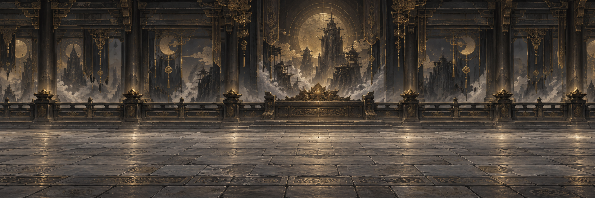

轮回者主角素材设计
延续束发、青巾与旧铜单肩甲，让人物与现有场景共享同一种质感。
全身设定
新设计 · 透明 PNG场景与动作对照
保留原版与首版草图的对照。游戏已使用进一步修订、校准脚点的 v2 图集；以下为 HTML 合成预览，不是游戏截图。
替换前行走素材
历史原图
观察当前头身比例、布料色彩与肩甲亮度。
首版行走草图
设计留档检查玄黑衣装、灰青围巾与旧铜肩甲的场景融合。
拖动暂停动画；按“播放动作”恢复 9 fps。
这里保留四方向 16 帧草图，按实测行列位置取窗。游戏使用修订后的图集与统一脚点定义，未直接使用这张草图。
完整图集
四方向 16 帧设计草图，保留完整透明画布；点击放大检查每一帧。
行走素材 · 设计候选
- 行顺序
- 朝下 / 朝左 / 朝右 / 朝上
- 帧窗依据
- 原图行列间距不等，按实测位置取窗
- 预览播放
- 9 fps · 每方向四帧草图循环
- 当前状态
- 首版草图留档；修订后的 v2 已接入游戏
全身设定用于确认形象与材质，行走草图用于检查小尺寸表现。两者均保留原始生成文件；游戏图集已另行修订并完成脚点校准。